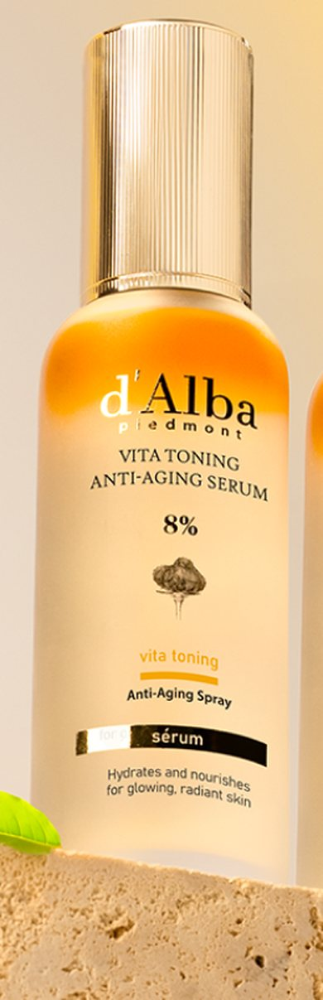
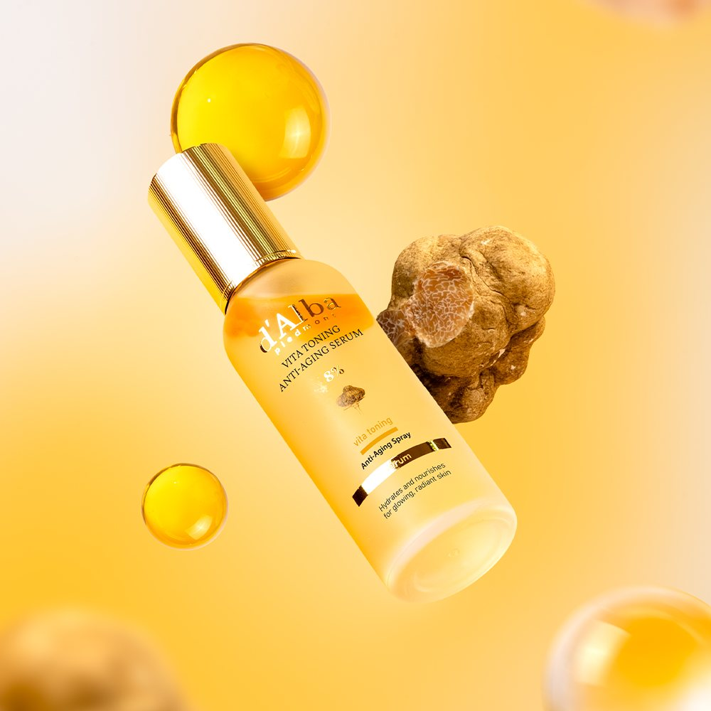
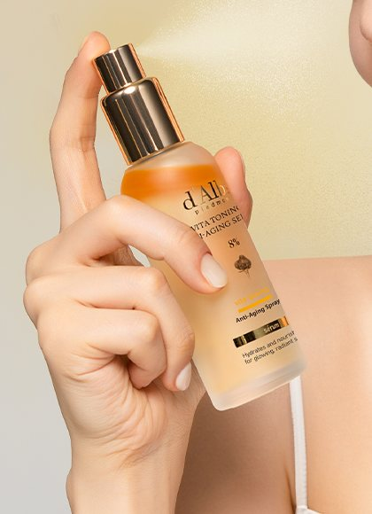
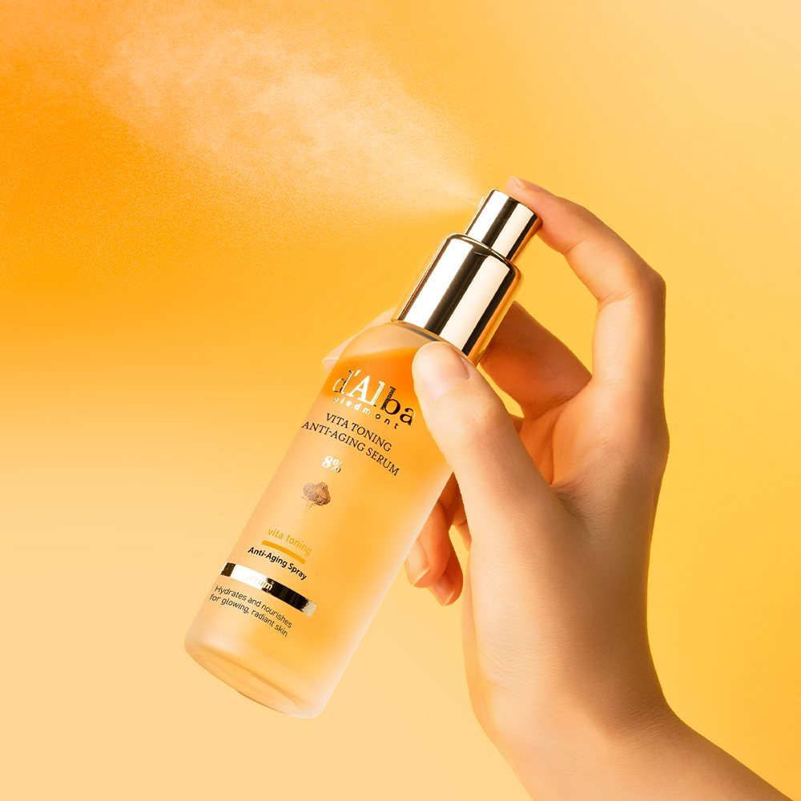

d'Alba Vita Toning Mist Serum Review at a Glance
This d'Alba Vita Toning Mist Serum 8% review covers the vitamin-focused spray serum from d'Alba (달바), the Korean brand behind the famous white-truffle mist. The bottle reads Vita Toning Anti-Aging Serum 8%, and in Korea it's sold as a 70ml duo marketed for "spray-on glow" with brightening and firming messaging.
It's a serum you mist on instead of pressing in with a dropper. Below we cover what the label says, how to use it and who it fits.

What's on the Bottle: Vita Toning 8% and Truffle
| Label Point | What It Says | Plain-English Take |
|---|---|---|
| Vita Toning 8% | 'Vita Toning Anti-Aging Serum 8%' (Korean listing mentions vitamin C) | Glow and even-looking tone focus |
| Anti-Aging Spray | Fine-mist pump | A serum that goes on in two seconds |
| Piedmont truffle mark | d'Alba Piedmont truffle logo | Brand signature, same family as the white-truffle mist |
| Hydration line | 'Hydrates and nourishes for glowing, radiant skin' | Moisture plus a dewy finish |


How to Use d'Alba Vita Toning Mist Serum
- Cleanse and pat skin dry.
- Mist: Close your eyes and spray 2–3 pumps from about 20–30cm away.
- Pat in with clean palms until absorbed.
- Seal with moisturizer; finish with sunscreen in the morning.
- Top up over makeup in the afternoon when skin looks flat or feels tight.


Spray, Feel and Finish
The spray is very fine and even, so it settles like fog rather than droplets and doesn't streak foundation. Skin looks fresher and slightly dewy right after. As with most serum mists, the glow is a finish you see immediately; any tone change is gradual and depends on your skin.
The duo setup makes sense in practice: one bottle on the vanity, one in a work bag.
Key Details
| Item | Details |
|---|---|
| Brand | d'Alba (달바) · Korea |
| Product | Vita Toning Anti-Aging Serum 8% (Vita Toning Mist) |
| Size / set | 70ml × 2 + gift bag (Korean official store) |
| Format | Fine-mist spray serum |
| Use | After cleansing/toner, or over makeup |
| US Amazon | Availability varies — we link an Amazon search |
Photo note: Real product photos from d'Alba's official Korean store listing (one image cropped to the product and hand). We didn't add AI-generated or mosaic images.
How It Compares
| d'Alba Vita Toning Mist Serum | d'Alba White Truffle Spray Serum | Plain Water Mist | |
|---|---|---|---|
| Focus | Vitamin / glow | Truffle hydration | Quick refresh |
| Finish | Dewy glow | Dewy, a bit richer | Dries fast |
| Replaces serum? | Can, in a simple routine | Can, in a simple routine | No |
| Best for | Dull-looking skin | Dry skin | Hot days only |
Pros & Cons
✅ Pros
- Super-fine spray works over makeup.
- Fast serum step for busy mornings.
- Recognizable Korean brand with a clear glow story.
- Duo is handy for home + bag.
⚠️ Cons
- Glow is mostly a finish; tone change is slow and personal.
- Mists get used up faster than dropper serums.
- Scented — patch test if sensitive.
- Exact duo set isn't always on US Amazon.
Who It Suits (and Who Should Skip It)
- Great for: People who want a dewy, fresh look in one quick step.
- Great for: Office workers in dry, air-conditioned or heated rooms.
- Great for: d'Alba fans who want a vitamin-focused alternative to the white-truffle mist.
- Maybe skip: If you prefer matte skin, or keep a strict fragrance-free routine.
d'Alba Vita Toning Mist Serum FAQ
What is d'Alba Vita Toning Mist Serum 8%?
It's a spray serum from Korean brand d'Alba (달바). The bottle reads 'Vita Toning Anti-Aging Serum 8%' and 'Anti-Aging Spray'. In Korea it's sold as 비타 토닝 미스트, often as a 70ml duo.
How do I use a spray serum?
After cleansing (and toner if you use one), close your eyes, hold the bottle 20-30cm away and mist 2-3 pumps. Pat in, then apply moisturizer. You can also mist lightly over makeup.
Does it replace my serum?
It can for a simple routine, since d'Alba positions it as a serum. If you already use a treatment serum, treat this as a light glow layer on top.
Is it the same as d'Alba White Truffle First Spray Serum?
No. The White Truffle spray serum is d'Alba's original bestseller. Vita Toning is a separate line with a vitamin and glow focus.
Is it good for sensitive skin?
Many people tolerate it fine, but it's a scented cosmetic. Patch test on the jaw for a few days first, and avoid spraying directly into eyes.
d'Alba Vita Toning Spray Serum
Korean vitamin-toning spray serum. Check current Amazon listings and sellers.